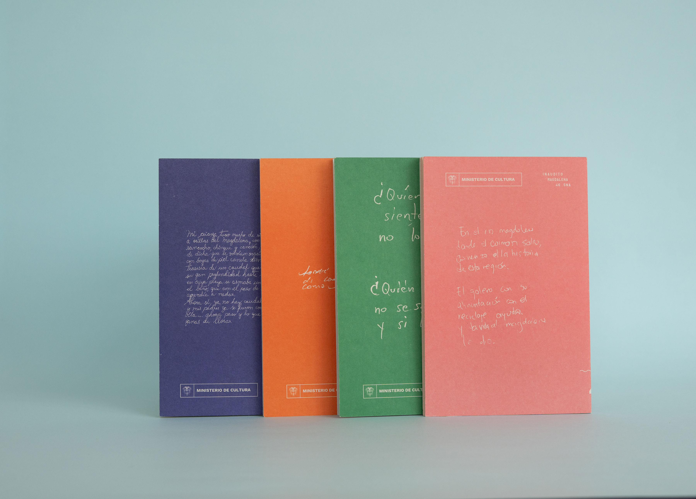

home
río adentro
curador/editor
diseñado por taller agosto
impreso en torrebeta
bogotá, 2022
Río adentro is a collection of zines that gathers the multiple mediation experiences developed across the 8 exhibitions held within the framework of the 46th National Salon of Artists of Colombia.
introduction to the edition:
That this version of the National Salon of Artists unfolds as a decentralized and intense pulse running through much of the country suggests a series of particular challenges for the processes that seek to disseminate and communicate what is happening, what will happen, and what has already happened within it. One of those challenges stems from the evident multiplicity of coordinates of the Salon—its many spaces and times—which inevitably reveals a second multiplicity: one of voices and narratives that have encountered each other, confronted each other, and coexisted. A singular polyphony that spoke to us, and continues speaking to us, of the encounter between diverse citizenries, creative practices, and the Magdalena River.
The social memory component of the 46SNA responds to the specific challenge of gathering that polyphony through the production of memory objects that materialize it and allow it to circulate. Objects such as this (these) fanzine(s).
federico reyes mesa



 fotos: ricardo pachecho
fotos: ricardo pachecho